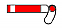
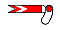
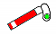

This is a brief (but hopefully still accurate!) overview of signalling as used in NSW. I am not safeworking expert, so if there are errors please let me know.
Double light signals are used mainly in the area where suburban and inter-urban passenger trains are used. The top light indicates whether a train can proceed or not, whereas the second light indicates the state of the next signal down the line. Giving the driver an indication of the following signal allows closer and more efficient running of trains in the busy CityRail network.
Often only a subset of these signals are used. In much of Sydney you will only see STOP, CAUTION and CLEAR aspects.
These signals are divided into two types: controlled (also known as absolute) and automatic (a.k.a. permissive). Controlled signals are operated by signal boxes and allow for protection of junctions and such. Automatic signals are not directly controlled; their purpose is to maintain the separation of trains.
Automatic signals can be distinguished from controlled signals in that the lights are vertically offset from each other.
| Indication | Meaning | Indication | Meaning | ||
| STOP | Stop. | MEDIUM | Proceed; the next signal displays at least a CAUTION or CAUTION TURNOUT indication. | ||
| LOW SPEED | Proceed ready to stop at the next signal. Where train stops are provided, a maximum speed of 25km/h applies (only applicable at signals with a low-speed indicator). | PRELIMINARY MEDIUM | Proceed. The next signal displays at least a MEDIUM indication. | ||
| CAUTION | Proceed; the next signal may be at stop. | CLEAR | Proceed. |
Controlled signals are controlled from a signal box. They are typically used before facing junctions and other areas which need protection.
| Indication | Meaning | Indication | Meaning | ||
| STOP | Stop. | MEDIUM TURNOUT | Proceed through the turnout. The next signal displays at least a CAUTION or CAUTION TURNOUT indication. | ||
| LOW SPEED | Proceed ready to stop at the next signal. Where train stops are provided, a maximum speed of 25km/h applies (only applicable at signals with a low-speed indicator). | MEDIUM | Proceed; the next signal displays at least a CAUTION or CAUTION TURNOUT indication. | ||
| CAUTION TURNOUT | Proceed at medium speed through the turnout; the next signal may be at stop. | PRELIMINARY MEDIUM | Proceed. The next signal displays at least a MEDIUM indication. | ||
| CAUTION | Proceed; the next signal may be at stop. | CLEAR | Proceed. |
Single colour lights come in several varieties, but the following usage is typical.
| Indication | Meaning | Indication | Meaning | ||
| STOP | Stop. | MEDIUM | Proceed; the next signal displays at least a CAUTION or CAUTION TURNOUT indication. | ||
| CAUTION | Proceed; the next signal may be at stop. | CLEAR | Proceed. |
| Home | Indication | Meaning | Home | Indication | Meaning |
|  | STOP | Stop. |  | CAUTION | Proceed; the next signal will be at stop. |
|  | CLEAR | Proceed. | CLEAR | Proceed. |
A signal which protects an interlocking area, for example a junction, crossing or yard.
A signal which protect the region outside a home signal.
A caution signal which warns of a following home signal.
Effectively a distant signal fixed at caution.
The signal which controls the entry of a train into the next section.
This is a small black box usually mounted under the awning at a station, with the words "GUARDS INDICATOR" written above a white light. This light is illuminated when it is safe for the train to leave the station. It is provided for the train guard, so that he/she does not blow the whistle for the train to leave when it is not safe to do so.
Throughout the Sydney metropolitan network, you will notice a silver box with an arm attached to the side which can be raised or lowered. These are situated on the left hand side of the track, usually next to a signal. These are known as train trips. When a signal prevents a train from proceeding, the arm is raised. If a passenger train attempts to pass the location, the arm hits a brake cock on the front, which forces the brakes to come one.
You might also notice these spread out along the platform at City Circle stations. These are used in conjunction with low-speed signalling to allow trains to run closer than normal, while still preventing a collision.
A yellow triangular which serves as a fixed distant signal. It is used to indicate that a train should approach with caution. These are often seen on country branch lines at the approaches to significant locations.